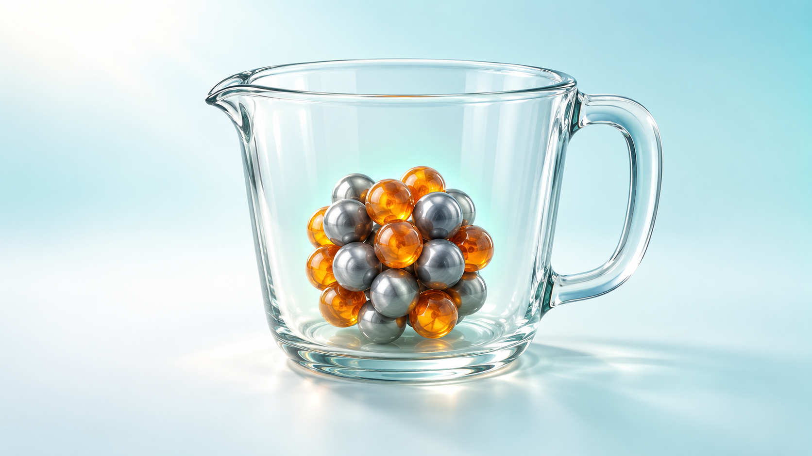
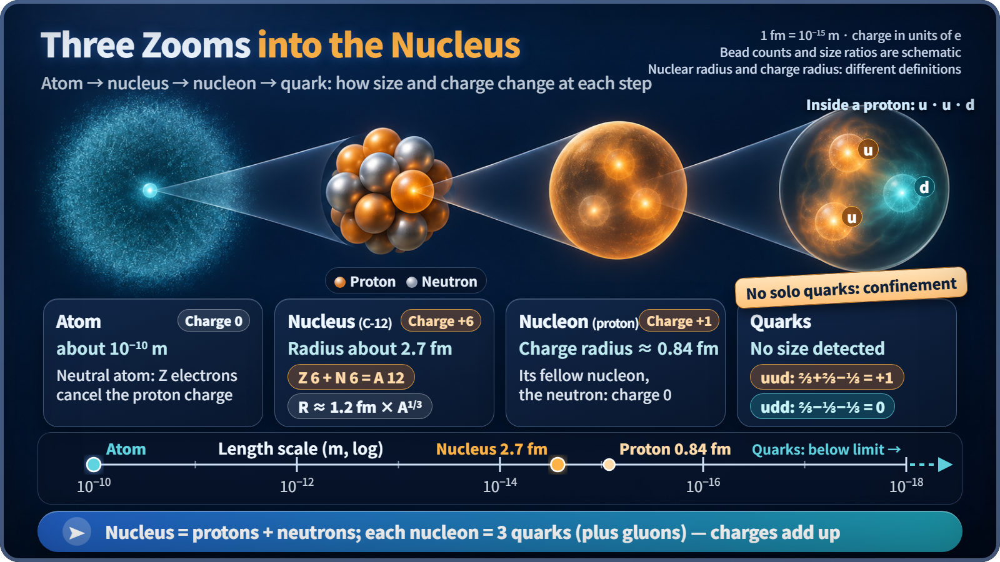
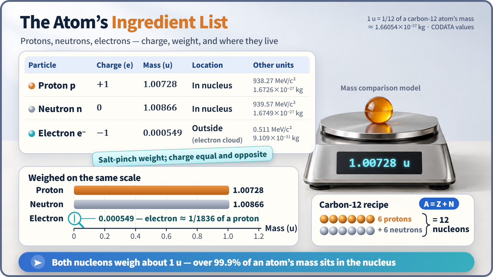

Nuclear & Radiation Basics · 003
Just Two Ingredients — Protons and Neutrons, the Building Blocks of the Nucleus
Whether it is hydrogen or uranium, a nucleus has only two ingredients, and the amounts decide everything from its name to its size.

Every atomic nucleus is made of only two ingredients: protons and neutrons, together called nucleons. The proton count Z names the element, the total A = Z + N sets the weight, and the radius grows with the cube root of A. One level down, each nucleon is built from three quarks. [1]
Reading uranium's recipe card
Open any cookbook and the first thing you see is the ingredient list: "200 g flour, 2 eggs, a spoonful of sugar." Imagine every atomic nucleus came with a card like that. Uranium's would read:
Uranium-238 · 92 protons · 146 neutrons · 238 in total
Whether it's hydrogen, carbon or gold, the list only ever has two items: protons and neutrons. The nucleus, the tiny kernel at the center of every atom, is defined entirely by how many of each go in. Together the two are called nucleons.
The main ingredient names the dish; both add weight
The proton carries a positive charge (+1), and its count decides the element, no exceptions: one proton is always hydrogen, six is carbon, 92 is uranium. This count is the atomic number Z. The neutron is electrically neutral (charge 0). It can't change the element's name, but it adds just as much weight as a proton. The number of neutrons is N.
Add them and you get the total number of nucleons, the mass number A:
A = Z + N (mass number = number of protons + number of neutrons)
Carbon-12 has 6 + 6 = 12; uranium-235 has 92 + 143 = 235. The number after the element's name is exactly this A. A uranium "variation" that differs only in its neutron count is an isotope, a story for another time.
The ingredients' ingredients: one level down to quarks
Look closely at flour and you find starch and protein. Nucleons are the same: a proton and a neutron are each built from three quarks. Nucleons use two kinds, the up (u) quark with charge +2/3 and the down (d) quark with −1/3. A proton is uud, so 2/3 + 2/3 − 1/3 = +1; a neutron is udd, so 2/3 − 1/3 − 1/3 = 0. [2]
Add up the masses of the three quarks and you get only about 1% of the proton's mass. The other 99% comes from the energy of the strong force that binds the quarks together, a force so strong that a single quark can't be pulled out on its own (quark confinement). Reactor design and operating calculations, though, are done at the nucleon level, never down at quarks.
How small a bowl holds all those ingredients?
If a whole atom is about 10⁻¹⁰ m across, the nucleus is tens of thousands of times smaller. Nuclei are measured in femtometers (fm, 10⁻¹⁵ m), and this empirical formula fits them well:
R ≈ 1.2 fm × A1/3 (the nuclear radius grows with the cube root of the mass number)
Carbon-12 comes out at about 2.7 fm and uranium-238 at about 7.4 fm. Uranium-238 has 238 nucleons, yet its radius is only 6.2 times larger, because nucleons are packed at an almost constant spacing, like marbles stacked tightly in a box. Eight times the ingredients means twice the radius. As a result, nuclear matter has a density of about 2.3×10¹⁷ kg per cubic meter: one teaspoon of it would weigh about 1.1 billion tonnes. [3]

On the scales: 1836 to 1
A proton is 1.6726×10⁻²⁷ kg and a neutron 1.6749×10⁻²⁷ kg. Scientists use a dedicated scale, the u (atomic mass unit), one-twelfth of the mass of a carbon-12 atom. On that scale a proton is 1.00728 u and a neutron 1.00866 u, both almost exactly 1; the neutron is heavier by about 0.14%. In energy units, through E = mc², they are 938.27 MeV/c² and 939.57 MeV/c². [1]
Electrons live not in the nucleus but in the electron cloud around it, and each weighs only about 1/1836 of a proton, which is why more than 99.9% of an atom's mass is in the nucleus. In recipe terms, electrons are a pinch of salt. Yet their charge is −1, exactly the size of the proton's but opposite in sign, and they decide how an atom bonds with others (its chemical behavior).

| Particle | Charge | Mass (u) | Mass (MeV/c²) | Location |
|---|---|---|---|---|
| Proton | +1 | 1.00728 | 938.27 | inside the nucleus |
| Neutron | 0 | 1.00866 | 939.57 | inside the nucleus |
| Electron | −1 | 0.000549 | 0.511 | electron cloud |
Where the recipe analogy breaks down
A neutron is not a proton and an electron stuck together. It is a particle in its own right, made of udd quarks.
The mass number is a count, not a weight. A uranium-235 atom actually weighs about 235.04 u, not 235.
A nucleus weighs slightly less than its ingredients. In a real recipe the dish weighs as much as its ingredients combined, but a nucleus is a little lighter than the sum of its parts. That missing mass, the mass defect, is the starting point of nuclear energy.
Key takeaways
A nucleus's ingredient list reads Z protons and N neutrons, A in total. The proton count sets the name, the total sets the weight, and its cube root sets the size. The uncharged member of the pair, the neutron, is the one that triggers fission inside a reactor.